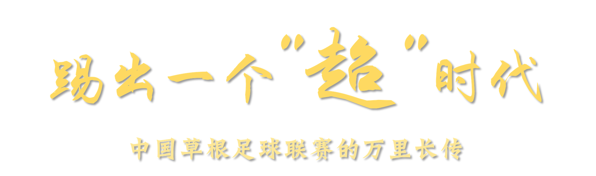
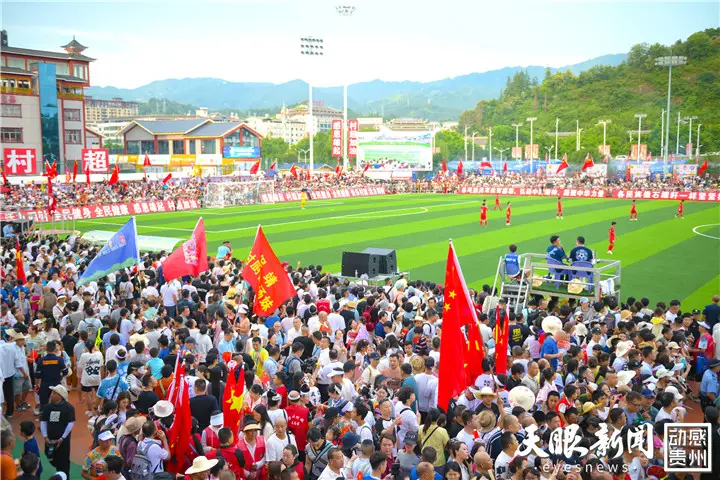
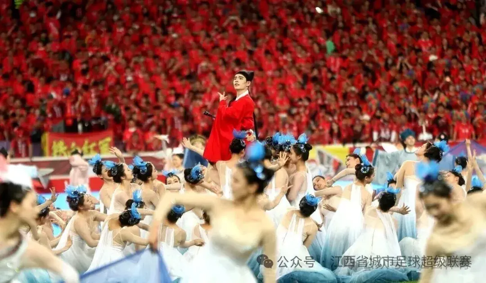
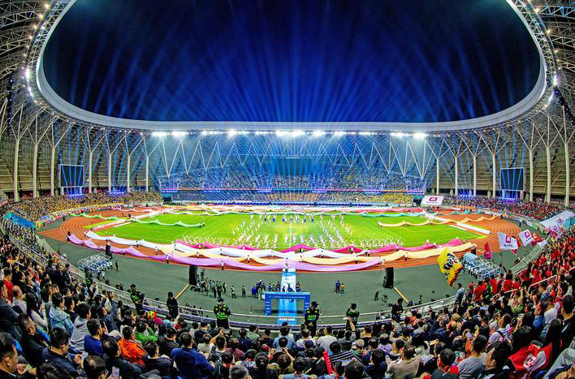
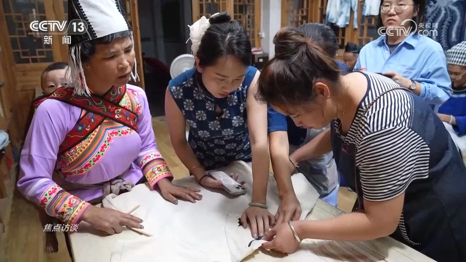

"一记长传，从榕江的后场发起；但接球的，不止一个前锋。"
中国草根足球的万里长传，接力的其实是无数个"村超"。
而最好的传球，从来是传给下一个时代。
当洪水冲走球场，什么冲不走？——25天重建，18万人归来
2025年6月下旬，贵州榕江一周内连续遭遇两次特大洪峰，河水漫过河道，淤泥铺满村超整片足球场，看台与市集摊位全部被洪水浸泡，这个火遍全网的草根赛场近乎沦为废墟。
没人想到，仅仅一个月后，清淤修复、全民抢工同步完成，7月26日村超感恩专场如期复赛，18万民众涌入小城，球场重新亮起灯光。
杀猪的、卷粉摊主、蜡染手艺人、普通教师，无数普通人白天谋生，傍晚奔赴赛场；这场泥地里诞生的民间赛事，在洪灾考验后愈发坚韧，一脚开出跨越全国的时代长传。

感恩专场复赛';"/>黄国锋，榕江副县长。2025年特大洪灾中，他第一时间启动应急响应，组织各方力量清淤抢修、重建球场，推动7月26日村超感恩专场如期复赛。
白天协调物资调度，傍晚坐镇指挥现场；从武警官兵到志愿者，从工程队到村民自救队，38.5万榕江人民在他的统筹下拧成一股绳。
仅仅一个月后，淤泥被清走、看台被修复，这个火遍全网的草根赛场从废墟中重新亮起灯光。"村超不是一座球场，而是一团火，我们必须守护它。"
"洪水冲走了球场，但冲不走的是一团火——这团火从不仅属于榕江。"
一颗足球如何点燃38.5万人的热爱——从五次失败到一次燎原
2023年5月13日，贵州榕江（三宝侗寨）和美乡村足球超级联赛正式开赛。20支村级参赛队伍，607名草根球员，全部零薪酬参赛。农民、摊贩、教师、手艺人——白天谋生糊口，夜晚奔赴热爱。
第六次尝试的成功，让村超从榕江'火'到了全国。
徐勃是榕江县委书记，把村超比作一团火。当问及背后是否有高人时，他的答案出人意料：没有专业操盘团队，没有外来资本造势，答案就是38.5万榕江人民。
赛场周边528支民间啦啦队自发排练侗族大歌、苗族芦笙舞，中场表演全由村民自主编排。政府始终补位不越位，把赛场舞台完整交给民众。
没有专业操盘团队，没有外来资本造势，答案就是38.5万人民。
20支村民自发的队伍，607名零薪酬球员，全部白天谋生，夜晚奔赴热爱。
热度从何而来？——三条路径的要素流动。
当全国19个省份陆续掀起"X超"热潮，问号随之产生：什么样的草根赛事能真正跑通"体育+文旅"的赛道？
我们选取了三个最具代表性的样本：村超、村BA、苏超——三个没有球星、没有版权的草根赛事，三种截然不同的出圈路径。我们用"县域文旅赛事成功指数"从7个维度拆解：草根赛事的"火"，是特例还是公式？
多雷达叠加图显示：村超在累计曝光和峰值曝光上几乎触及外圈，但现场观众承载力明显内缩，暴露线上声量与线下承载的结构性落差；村BA持续月数最长（36个月），但带动消费仅50分，反映篮球赛事文旅转化的天然瓶颈；苏超带动消费和首月曝光突出，但持续月数仅6个月——首届赛事的先天局限。三种模式：村超是"脉冲型爆款"，村BA是"长坡厚雪"，苏超是"效率先锋"。
超经济的隐秘结构——四力耦合与产业链传导的深层逻辑
2025年6月，常州苏超赛场内，大牌广告矩阵中一块朴素广告牌格外醒目：阿迪达斯、京东、喜力等知名品牌合围之下，"东哈·东北街边烧烤"位于22块场内官方广告位之中，也是全场唯一的个体户赞助商。
苏超主办方专门设置5万元小微企业专属赞助席位，降低赛事商业入局门槛。即便头部品牌一位难求，主办方依旧保留街边小店的曝光席位。全品类34家品牌，总招商2.02亿元——在业余赛事中史无前例。
从2022到2025年，榕江县一般公共预算支出从25.47亿元增至39.8亿元，增长56.3%；财政收入从3.05亿元增至3.81亿元，增长24.6%。
更惊人的是旅游收入的跃升：2022年仅35亿元，2023年飙升至84亿元（同比增长140%），2024年突破108亿元，2025年预计达125亿元——三年增长2.6倍。财政资金与旅游收入的双向增长，印证了"村超"从草根赛事到县域经济引擎的蜕变。
旅游收入破百亿，钱流向了哪里？
三年赛场市集总营收达13.41亿元，其中90%以上收益流向本地小微经营者。他们不是抽象的"数据"，而是具体的"人"——卷粉摊主、烧烤商户、蜡染手艺人，他们才是真正的经济受益者。
这些摊位背后，是榕江最普通的生计。而赛场上踢球的，也正是这些人的邻居。
607名参赛球员中，农民/摊贩占42%，务工人员31%，教师与手艺人占27%。没有职业球员，没有赞助商签约球员——
每个人都是下了班、关了店、收摊后奔赴球场的普通人。正是这种"非职业性"，让村超保持了最纯粹的草根底色，也创造了最惊人的就业带动。
数据来源：基于607名球员、528支啦啦队、2000+摊位测算
金字塔结构：苏超以379.6亿元综合消费规模稳居塔尖（占全赛季43%），粤超（152.6亿）和湘超（113.59亿）构成第二梯队。但更多县域联赛消费规模仍在10亿元以下。
单县效能：全国19省联赛综合消费约880亿元，而村超一个县的旅游收入就超过108亿元。这意味着村超的"单位面积经济密度"远超多数省级联赛——问题的关键不是规模，而是模式。
产业启示：从村超到苏超，中国草根足球正在完成从"现象"到"产业"的质变。每个县需要找到属于自己的"超"——不一定是足球，但一定是群众真心热爱、具有本土文化基因的事物。

球迷狂欢';"/>
夜市经济';"/>村超以单县之力撬动百亿消费，苏超以13城联动逼近400亿——草根赛事的经济版图正在从"单点爆款"走向"全国产业"。但比数字更重要的，是每个"超"背后那群下了班、关了店、收摊后奔赴球场的人。
超经济的引擎，不是"超级"的经济数字，而是"超越"传统文旅逻辑的群众创造力。
从图中可以清晰看到苏超13城市间的显著差异：苏州和南京作为GDP领先城市，票房和上座率也处于第一梯队；而宿迁和连云港虽然经济总量较小，但上座率却出奇地高——这证明城市经济水平与足球热情并非简单正相关。
一个有趣的现象：苏超的场均观众2.86万人次，已经接近中甲联赛水平。13个城市的"德比"效应——如南京vs苏州、无锡vs常州——正是苏超传播力最强的引擎。城市之间的竞争关系，比单纯的足球比赛更能激发观众热情。这是苏超模式区别于村超的核心特征。
两种模式呈现出截然不同的发展路径：村超在"文化内核"（80分）和"草根占比"（100分）上占据绝对优势，但在"赛事营收"（30分）和"单场观众"（70分）上落后；苏超则在"消费范围"（85分）、"流量工具"（95分）和"赛事营收"（85分）上表现突出，但"文化内核"（60分）相对薄弱。
两种模式并非对立关系，而是中国草根足球光谱的两端：村超证明"零商业化也能火"，苏超证明"业余赛事也能招商2亿"。一个回答"为什么能"，一个回答"怎么做大"。从村超到苏超，中国草根足球正在完成从"现象"到"产业"的质变。
为什么淄博烧烤三个月熄火，村超却烧了三年——繁荣有涨有退，超经济的结构性风险
淄博烧烤、哈尔滨冰雪、天水麻辣烫……中国互联网从不缺"一夜爆红"的故事。但多数热点如昙花一现，唯有村超在两年间持续升温，甚至从"贵州现象"扩散为"全国浪潮"。
折线清晰显示，唯有村超从2023年5月开赛至今，热度曲线持续攀升——从首月的10分基准，到2024年底的100分峰值。这不是"一次性网红"，而是一个拥有持续内容供给能力的体育赛事。
但持久不等于健康。
当38.5万人口的小城承载单日18万游客，当旅游GDP比值高达102.9%，当非比赛日游客量仅为比赛日的12%——村超的"潮汐效应"背后，是四力联动的奇迹，也是四力失衡的隐忧。
四力耦合是村超的护城河，也是它的阿喀琉斯之踵：当任何一力出现波动，整个系统都会承压。
村超创造了奇迹，但38.5万人口的小城承载单日18万游客，基础设施的极限在哪里？当季节性波动让非比赛日恢复冷清，"超经济"的可持续性又在哪里？
村超繁荣背后存在结构性脆弱：季节性波动意味着全年旅游收入并非均匀分布，7-8月比赛旺季贡献了全年约60%的游客量，而淡季的非比赛日游客量仅为比赛日的12%。
更严峻的是基础设施承载压力：酒店床位缺口率达83%，旅游收入/GDP比值高达102.9%——这意味着旅游收入已经超过了榕江全县GDP本身。一个小城"承载"了一个超过自身经济规模的产业，一旦赛事遇冷或遭遇极端天气（如2025年洪灾），整个县域经济将面临系统性风险。
38.5万常住人口 vs 峰值18万日游客（超载率46.8%）。酒店床位仅1.1万张，峰值缺口达83%；交通日承载上限8万人次，实际峰值日涌入18万人。
旅游综合收入/GDP = 102.9%（旅游收入超过GDP本身！）。三产占比达58.8%，对旅游业高度依赖。"把所有鸡蛋放在一个篮子里"。
非比赛日游客量仅为比赛日的12%。赛季/非赛季消费差异超过10倍。淡旺季的剧烈波动考验着小微商户的韧性。
赛事带动周边房租上涨35%-60%；本地居民生活成本上升，部分老年人反映"热闹是他们的"。
三个风险仪表盘指向同一个核心判断：村超模式处于中等偏高风险区间（72/65/58分），远未到不可逆的临界点。基础设施承载压力（72分）是最高分项——榕江全县年财政收入仅3.8亿元，而2025年洪灾直接经济损失已超2亿元，球场与交通的承载天花板在极端冲击下暴露无遗。产业单一依赖（65分）是结构性隐患，当旅游收入在县域经济中的占比持续攀升，多元缓冲垫就被压缩到单薄的一层。季节性波动风险（58分）则让上述两层风险进一步叠加：赛事集中在夏季、游客集中在周末，一旦遇到极端天气、交通中断或赛事停摆，收入端就会出现断崖式缺口。
但"中等风险"同时意味着"仍有腾挪空间"。三个指标均处于可控阈值内，只要政策端提前布局产业多元化、基础设施韧性建设和反季节文旅产品，就能把风险从"橙黄区间"拉回到"绿色区间"。村超不是必须被否定的问题，而是不应该成为唯一选项的答案——一个健康的县域经济，需要让足球的热度与产业的厚度同步生长。
"我们要警惕把村超'神话化'。它确实创造了奇迹，但奇迹不应该成为唯一的选项。一个健康的县域经济，不应该把全部希望寄托在一颗足球上。"
—— 榕江县某基层干部（匿名）
村超的隐忧，不是"会不会凉"，而是"怎么凉得更慢"——以及，凉的时候，榕江还剩下什么？
要回答这个问题，我们需要把目光投向更远的地方：那些跑得更久的草根足球联赛，做对了什么？
从一颗星到满天星——中国县域文旅赛事成功指数与乡村振兴的新可能
赖蕾是侗族服饰榕江县级代表性非遗传承人，也是侗寨2000多名织娘的领头人。她带领当地人织布、蜡染、做手艺，推动了侗族非遗市场化和品牌化。
从侗寨到世界，赖蕾用手中的织机织出了一条连接传统与现代的路。她的个人蜕变，正是村超带动乡村振兴的缩影。

2024年首届国际友谊赛';"/>全球传播网络地图揭示了一个惊人的事实：一个贵州小县的足球赛，已经连接了六大洲的50余个国家。榕江不再是地图上一个无名的小点，而是中国草根体育文化走向世界的一个枢纽。
海外播放量超过12亿次，这意味着平均每个海外网民至少接触过一次"村超"内容。BBC、CNN、法新社等国际媒体的报道进一步放大了传播效应。
但这张网络不是一天织成的——
2023年本土火种，20支村级队伍泥地开球；2024年国际友谊赛，12国参与，首次海外传播破亿；2025年一带一路交流赛，43国建立友谊赛联系。
从"被看见"到"被参与"，村超的国际化仍在路上。
AHP模型的五维雷达图给出了一个清晰的结论：村超模式"部分可复制"。榕江（84.2分）和江苏（78.5分）的优势在于"群众基础"和"政府能力"两个维度的双高；台江（72.5分）依托村BA积累，同样具备较高可复制性。
但西部典型县（58.3分）和东部无特色县（41.7分）的评分反映了现实困境：文化资源和交通条件是决定可复制性的关键瓶颈。没有侗族大歌、没有苗族芦笙、没有高铁直达——很多县域复制村超时，缺少的不是资金和政策，而是文化基因和群众基础。这正是我们强调"每个县需要找到自己的'超'"的原因。
村超的意义，远不止于一个县的文旅收入。它提出了一个更深的问题：在乡村振兴的国家战略下，一个县域如何找到属于自己特色的发展途径？
答案或许就藏在"超"字里——超越了传统的政府主导模式，超越了体育赛事的边界，超越了一个县的地理局限。
从榕江到台江，从贵州到江苏，从乡村到城市——
这不是一颗星的独舞，而是满天星的序曲。
从榕江的泥地到江苏的球场，
不靠球星，不靠资本，
只靠普通人的热爱。
这，就是"超"时代。
本作品数据采集时间为2025年1月至2026年6月。所有标注"2025年预计"的数据基于2025年上半年实际数据按线性外推估算，标注"2026年"的数据为截至2026年6月的实际统计值。
1. "六次出圈尝试"的前五次详细数据因未公开披露，部分数据基于公开报道和采访整理，可能存在偏差。
2. "可复制性燎原模型"的评分具有一定主观性，不同专家可能给出不同评分。
3. 2025年预测数据基于线性外推，实际数据可能因洪灾等突发事件产生偏差。
4. 部分省级联赛数据尚未完全公开，采用已公开数据估算。
1. "六次出圈尝试"的前五次详细数据因未公开披露，部分数据基于公开报道和采访整理，可能存在偏差。
2. "可复制性燎原模型"的评分具有一定主观性，不同专家可能给出不同评分。
3. 2025年预测数据基于线性外推，实际数据可能因洪灾等突发事件产生偏差。
4. 部分省级联赛数据尚未完全公开，采用已公开数据估算。
中国优势：中国草根足球的独特优势在于"新媒体+民族文化"的组合，这是任何国家都无法复制的核心竞争力。
作品制作团队：武汉体育学院 · 指导老师：辛宗雪